01
习近平就建设更高水平平安中国作出重要指示强调 坚定不移贯彻总体国家安全观 以更高水平平安中国建设保障中国式现代化行稳致远
中共中央总书记、国家主席、中央军委主席习近平近日就建设更高水平平安中国作出重要指示指出，党的十八大以来，平安中国建设取得显著成效，人民安居乐业、社会安定有序的良好局面更加巩固，我国成为世界上最安全的国家之一。

中共中央总书记、国家主席、中央军委主席习近平近日就建设更高水平平安中国作出重要指示指出，党的十八大以来，平安中国建设取得显著成效，人民安居乐业、社会安定有序的良好局面更加巩固，我国成为世界上最安全的国家之一。
本台播发央视快评《以更高水平平安中国建设保障中国式现代化行稳致远》。
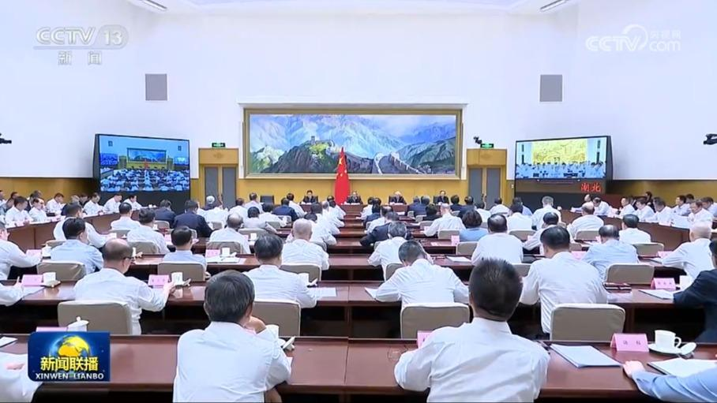
9月28日，国务院召开全国安全生产视频会议，中共中央政治局常委、国务院总理李强在会上强调，要深入学习贯彻习近平总书记关于安全生产的重要指示精神，坚持人民至上、生命至上，进一步压紧压实责任，抓实抓细安全生产各项工作，坚决防范遏制重特大事故发生，切实维护人民群众生命财产安全和社会大局稳定。
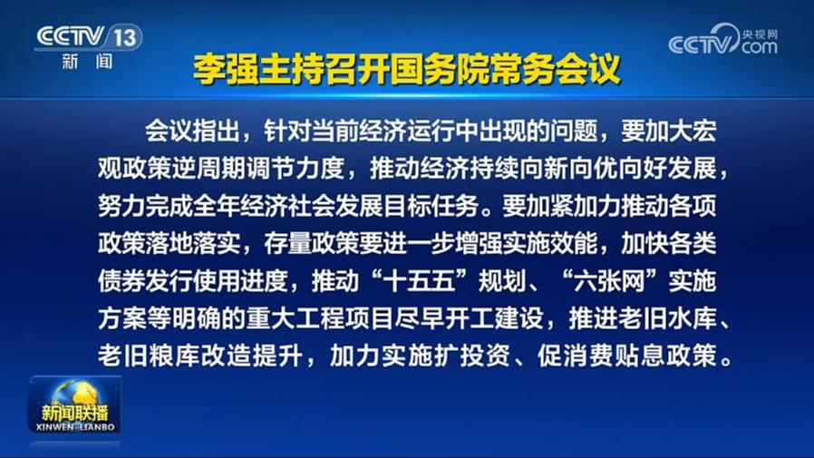
国务院总理李强9月28日主持召开国务院常务会议，研究宏观政策发力提效、促进有效投资有关工作，听取新污染物治理进展情况汇报，审议通过《事业单位登记管理条例（草案）》。
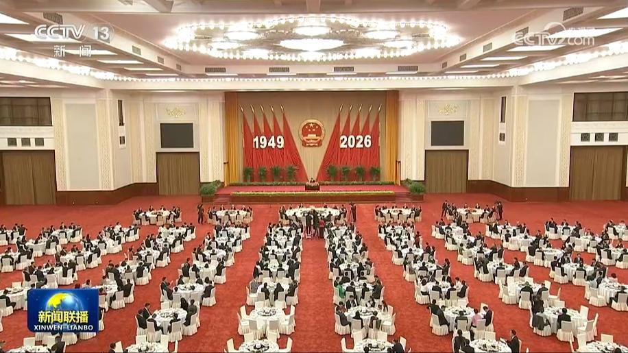
全国政协办公厅、中共中央统战部、国务院侨办、国务院港澳办、国务院台办、中国侨联28日在北京人民大会堂联合举行国庆招待会，庆祝中华人民共和国成立77周年。中共中央政治局常委、全国政协主席王沪宁出席并致辞。他表示，要以习近平新时代中国特色社会主义思想为指导，巩固和发展最广泛的爱国统一战线，把海内外中华儿女的智慧和力量汇聚起来，为全面建成社会主义现代化强国、实现中华民族伟大复兴而努力奋斗。
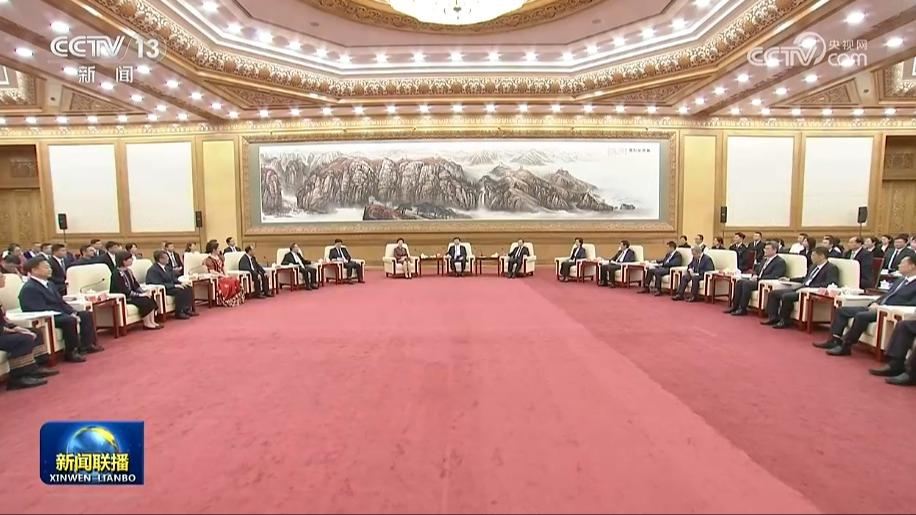
中共中央政治局常委、全国政协主席王沪宁28日在京会见全国少数民族参观团。他表示，要深入学习贯彻习近平总书记在庆祝中国共产党成立105周年大会上的重要讲话精神，学习贯彻习近平总书记关于加强和改进民族工作的重要思想，深刻领悟“两个确立”的决定性意义、坚决做到“两个维护”，坚定走中国特色解决民族问题的正确道路，凝聚起推进中国式现代化的磅礴力量。
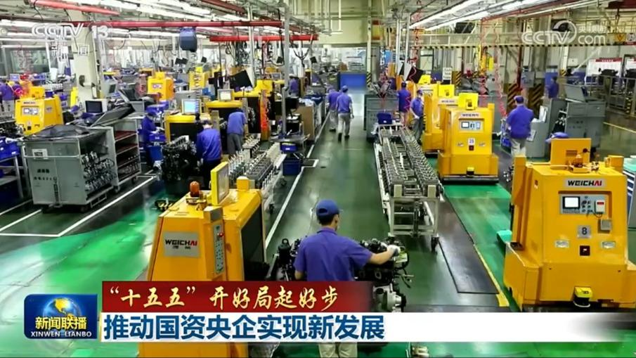
国务院新闻办今天（9月28日）举行“开局起步‘十五五’”系列主题新闻发布会，国务院国资委相关负责人介绍落实“十五五”规划，推动中央企业高质量发展有关情况。
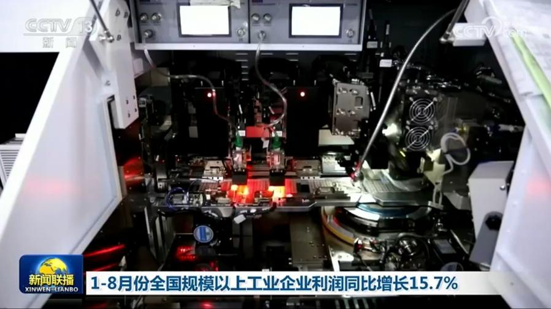
国家统计局今天（9月28日）发布的数据显示，今年以来，我国工业生产稳中有进，以高技术制造业为代表的新动能积聚壮大，带动规模以上工业企业利润保持较快增长。1—8月份，全国规模以上工业企业实现利润总额52719.8亿元，同比增长15.7%，继续保持两位数增长。
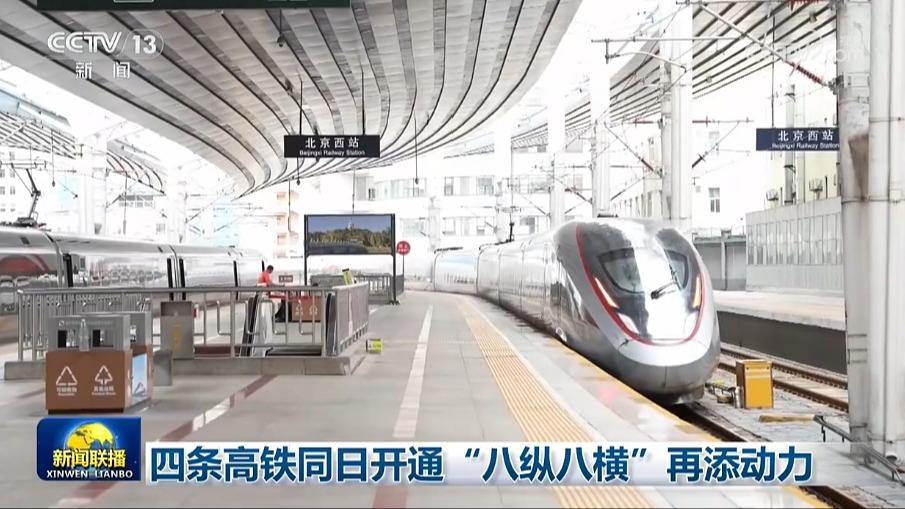
今天（9月28日），我国四条高铁开通运营，新增高铁运营里程1100多公里，为沿线经济高质量发展注入了新动力。
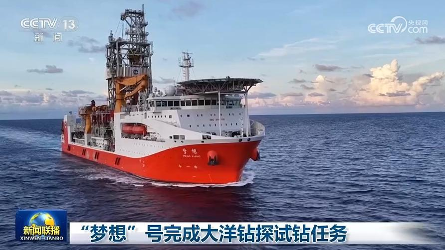
记者今天（9月28日）从自然资源部中国地质调查局了解到，“梦想”号大洋钻探船于近期完成南海大洋钻探试钻任务，成功钻获南海洋盆玄武岩样品。
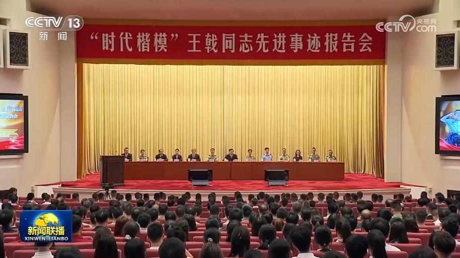
今天（9月28日）上午，中央宣传部、教育部、科技部、国家国防科工局、中央军委政治工作部、湖南省委在人民大会堂联合举行“时代楷模”王戟同志先进事迹报告会。
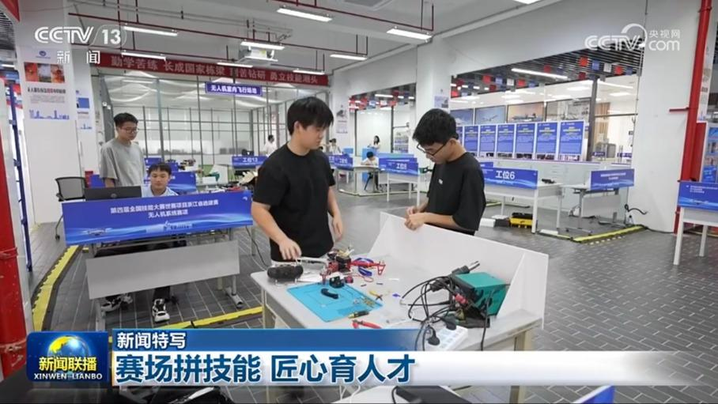
第48届世界技能大赛于昨晚（9月27日）在上海闭幕，1385名来自全球的选手齐聚赛场，激烈竞技。我国派出71名选手，参加了全部64个赛项的比赛，全面展现了中国技能人才的实力。
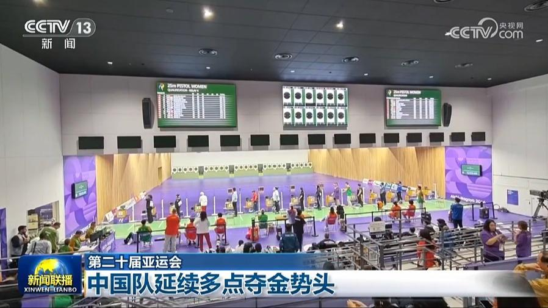
第二十届亚运会继续进行，在跳水赛场，林珊、龙艺萍分获女子1米跳板金、银牌。王宗源夺得男子1米跳板金牌。
农历八月十八，钱塘江大潮迎来全年最佳观赏期。今天（9月28日）中午，大潮以一线潮姿态涌向塔山坝，把江面一分为二，在隆隆巨响中浩荡向前。在塔山坝上游梁家墩处，受河道走向与沙洲影响，江潮形成壮美的交叉潮。12时52分，大潮抵达海宁盐官观潮胜地公园，占鳌塔下白练横江，一路奔涌。随后，潮水扑向老盐仓，撞击大坝后腾空翻涌、回旋激荡，形成气势磅礴的回头潮、冲天潮。
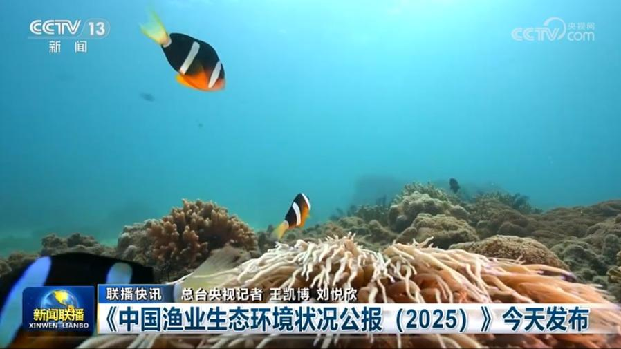
《中国渔业生态环境状况公报（2025）》今天发布
27日，中国大熊猫“平平”“福双”搭乘包机抵达美国亚特兰大国际机场。随后，它们被转运至亚特兰大动物园，进行约一个月的常规检疫隔离。中方兽医和饲养员将驻园3个月，照顾两只大熊猫度过隔离检疫期，并帮助它们进行应激适应与行为训练，以尽快适应新环境。
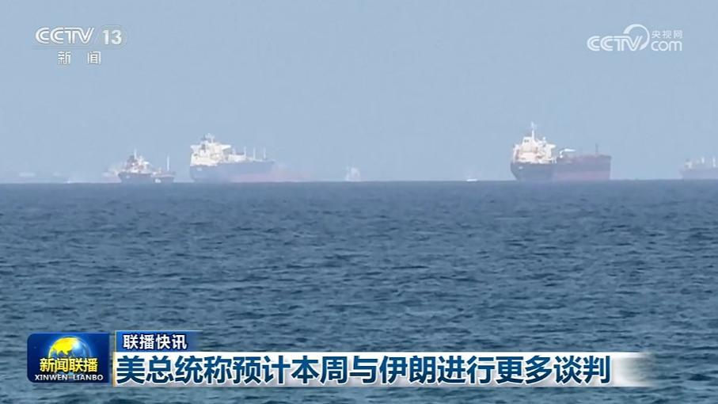
美总统称预计本周与伊朗进行更多谈判